China Employee Termination in 2026: Pulse Escalation-Map Brief for Foreign Employers
Key takeaways
- Foreign employers should run China termination with an escalation map, not a passive checklist.
- The biggest risk is delayed escalation on route, evidence, or payroll mismatches.
- Plain-language legal context should anchor decisions before operational actions.
- Escalation triggers must be pre-defined with named owners and response windows.
- Legal appendix supports decisions, but primary narrative should stay concise and actionable.
Pulse opener: where teams lose time and money
In cross-border operations, China termination cases often become expensive when clear warning signals are treated as routine issues. By the time escalation happens, payroll lock windows or employee communication events may already have passed. An escalation-map model fixes this by defining what must be escalated immediately, who receives it, and what stop/go action follows.
Plain-language legal context first
China is not an at-will termination jurisdiction. Employer-initiated termination generally requires a lawful basis under the Labor Contract Law framework, plus coherent evidence and process conduct that can survive arbitration review. Three legal anchors matter most for foreign operators:
- Labor Contract Law (route and severance fundamentals)
- Implementation Regulations (Decree No. 535)
- SPC labor-dispute interpretation (evidence/procedure scrutiny)
Practical implication: route legality is necessary, but execution consistency determines defensibility.
Escalation map: triggers, routes, and actions
Trigger E1 — Route ambiguity
Escalate to: Legal lead + HR head immediately
Response window: Same business day
Action: Freeze employee-facing activity; issue canonical route memo.
Trigger E2 — Evidence contradiction
Escalate to: Compliance + HR operations
Response window: 24 hours
Action: Pause case progression; run chronology reconciliation.
Trigger E3 — Manager script deviation
Escalate to: HRBP + line manager supervisor
Response window: Immediate
Action: Stop further communications until script re-brief confirmation.
Trigger E4 — Settlement/payroll mismatch
Escalate to: Payroll lead + legal counsel
Response window: Before payroll lock
Action: Hold release; complete line-item mapping and co-sign.
Trigger E5 — Local interpretation gap
Escalate to: Local counsel/contact + compliance owner
Response window: Prior to final action
Action: Block finalization until city-level memo is logged.
Trigger E6 — Closure evidence gap
Escalate to: Operations + compliance archive owner
Response window: Within 2 business days post-payment
Action: Keep case open; close only after full evidence packet completion.
Why this model helps foreign employers
Global teams need high signal, low noise reporting. An escalation map gives leadership immediate visibility into whether a case is stable or in controlled hold. It also prevents “silent drift,” where each function assumes another team has resolved a critical issue. With clear triggers and response windows, escalation becomes predictable and auditable.
Scenario snapshots
Scenario A: Route issue caught early
A case appears ready, but route wording diverges across legal and manager notes. E1 fires. Team pauses outward messaging, reconciles route rationale, and restarts with one canonical memo. Outcome: lower challenge risk.
Scenario B: Payroll mismatch near lock
Settlement terms are signed, but payroll coding does not align with agreed component treatment. E4 fires. Release is held, payroll/legal reconciliation is completed, then payment proceeds with corrected mapping. Outcome: stronger post-payment defensibility.
Daily SOP by role
HR
- Monitor escalation triggers daily.
- Enforce pause controls for active triggers.
- Log owner, ETA, and resolution notes.
Legal
- Own E1 and support E4 interpretation.
- Validate route and settlement consistency.
- Provide concise risk guidance to leadership.
Manager
- Follow approved script.
- Escalate factual changes immediately.
- Avoid undocumented commitments.
Payroll/Finance
- Validate settlement-to-payroll mapping pre-lock.
- Confirm tax treatment assumptions.
- Archive payment proof and reconciliation outputs.
Compliance/Ops
- Audit trigger handling and response-time adherence.
- Track repeat trigger causes.
- Recommend preventive controls weekly.
Required document checklist
- Canonical route memo
- Evidence chronology with version history
- Approved communication script log
- Settlement mapping sheet
- Payroll/tax reconciliation worksheet
- City-level validation memo
- Closure evidence packet
Exception playbook
- Repeated E1/E2 in same case: escalate to regional leadership for decision reset.
- Any unresolved E4 at lock-minus-1 day: automatic hold.
- E6 unresolved after SLA: mandatory compliance audit note.
System implementation notes
Suggested fields:
case_id, city, trigger_e1_to_e6, severity, owner, eta, status, last_update, escalated_at, resolved_at.
Suggested controls:
- Auto-alert when trigger response window is exceeded.
- Hard block on E1/E2/E4 unresolved status.
- Closure lock until E6 completion.
Common mistakes and prevention
- Mistake: escalating too late.
Prevention: trigger thresholds + response windows.
- Mistake: unclear owner routing.
Prevention: named escalation map by function.
- Mistake: treating payroll mismatch as minor.
Prevention: hard hold rule before lock.
- Mistake: closing case on payment event alone.
Prevention: evidence packet completion gate.
What to do now
- Define E1-E6 trigger rules in your active tracker.
- Assign named escalation owners and SLA windows.
- Implement auto-hold for unresolved E1/E2/E4.
- Standardize local-validation memo flow.
- Review weekly trigger frequency and root causes.
What to watch next
- Continued dispute emphasis on process coherence.
- Ongoing city-level variability in practical handling.
- Settlement/payroll coordination as recurring failure point.
FAQ
Is this legal advice?
No. This is informational operations guidance.
Can unilateral routes still be used?
Potentially yes, where statutory conditions and evidence support them.
Why focus on escalation rather than checklists?
Because delayed escalation is a major driver of avoidable dispute exposure.
Is local validation always needed?
For foreign employers, yes—city differences can materially affect outcomes.
Legal depth appendix (secondary)
This brief is grounded in the Labor Contract Law, State Council Decree No. 535, and SPC labor-dispute interpretation, with practical context from China Briefing, Littler, ICLG, and PwC.
Disclaimer
This content is informational only and does not constitute legal, tax, or employment advice. Employers should seek qualified PRC legal and tax counsel for case-specific decisions.
Sources
- National People’s Congress — Labor Contract Law of the PRC (English): http://www.npc.gov.cn/zgrdw/englishnpc/Law/2007-12/13/content_1384064.htm (accessed 2026-03-04).
- State Council — Implementation Regulations of the Labor Contract Law (Decree No. 535): https://www.gov.cn/gongbao/content/2008/content_1124615.htm (accessed 2026-03-04).
- Supreme People’s Court — Interpretation on Application of Law in Labor Dispute Cases (Fa Shi [2020] No. 26): https://www.court.gov.cn/fabu/xiangqing/243981.html (accessed 2026-03-04).
- China Briefing / Dezan Shira — Employee Termination in China (updated 2025-10-17): https://www.china-briefing.com/news/employee-termination-in-china/ (accessed 2026-03-04).
- Littler — Key Recent Developments in China’s Employment Law: https://www.littler.com/news-analysis/asap/key-recent-developments-chinas-employment-law-china-us-comparative-perspective (accessed 2026-03-04).
- PwC Worldwide Tax Summaries — PRC Individual: Taxes on Personal Income: https://taxsummaries.pwc.com/peoples-republic-of-china/individual/taxes-on-personal-income (accessed 2026-03-04).
- ICLG / Zhong Lun — Employment and Labour Laws and Regulations: China: https://iclg.com/practice-areas/employment-and-labour-laws-and-regulations/china (accessed 2026-03-04).
Need local employment support in China?
If you need a compliance-first partner for hiring, payroll, and risk controls in China, China-Payroll.com can help evaluate the right setup.
Image Prompt Pack
Create a 16:9 hero image for article title: 'China Employee Termination in 2026: Pulse Escalation-Map Brief for Foreign Employers'. Scene: global operations team evaluating workforce model options for China market entry. Include motifs: decision matrix, org ch…